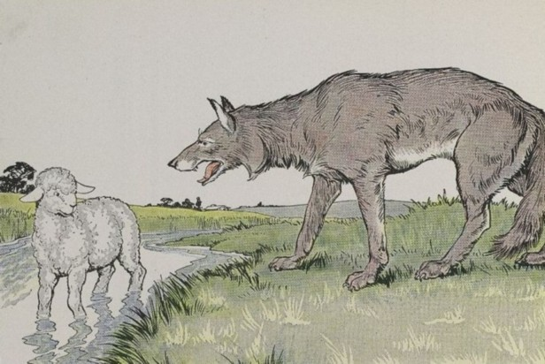

Le Loup et l’Agneau
La raison du plus fort est toujours la meilleure :
Nous l’allons montrer tout à l’heure.
Un agneau se désaltérait
Dans le courant d’une onde pure.
Un loup survint à jeun, qui cherchait aventure,
Et que la faim en ces lieux attirait.
Qui te rend si hardi de troubler mon breuvage ?
Dit cet animal plein de rage :
Tu seras châtié de ta témérité.
Sire, répond l’agneau, que Votre Majesté
Ne se mette pas en colère ;
Mais plutôt qu’elle considère
Que je me vas désaltérant
Dans le courant,
Plus de vingt pas au-dessous d’elle ;
Et que, par conséquent, en aucune façon
Je ne puis troubler sa boisson.
Tu la troubles ! reprit cette bête cruelle ;
Et je sais que de moi tu médis l’an passé.
Comment l’aurais-je fait, si je n’étais pas né ?
Reprit l’agneau : je tette encor ma mère. —
Si ce n’est toi, c’est donc ton frère. —
Je n’en ai point. — C’est donc quelqu’un des tiens ;
Car vous ne m’épargnez guère,
Vous, vos bergers et vos chiens.
On me l’a dit : il faut que je me venge.
Là-dessus, au fond des forêts
Le loup l’emporte, et puis le mange,
Sans autre forme de procès.